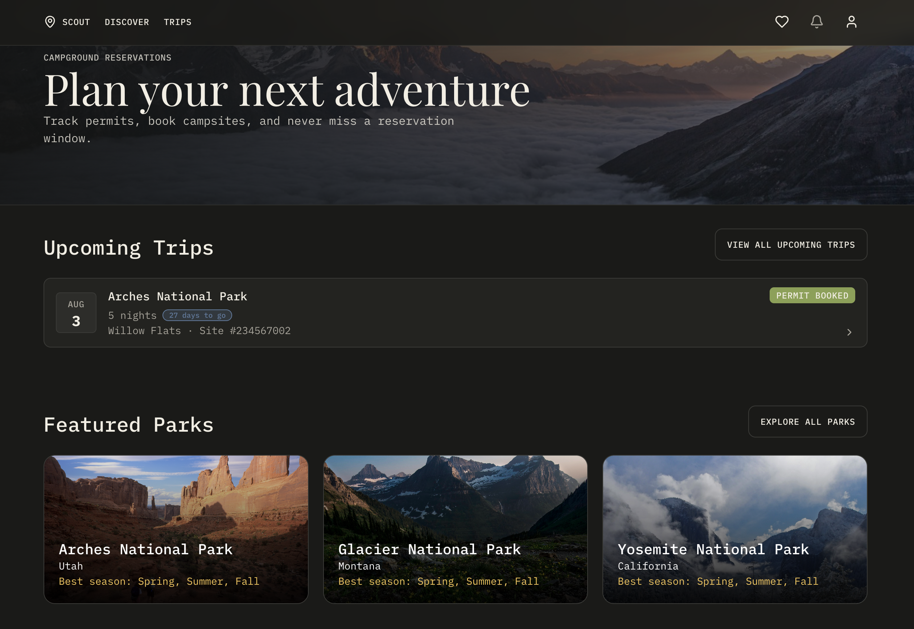
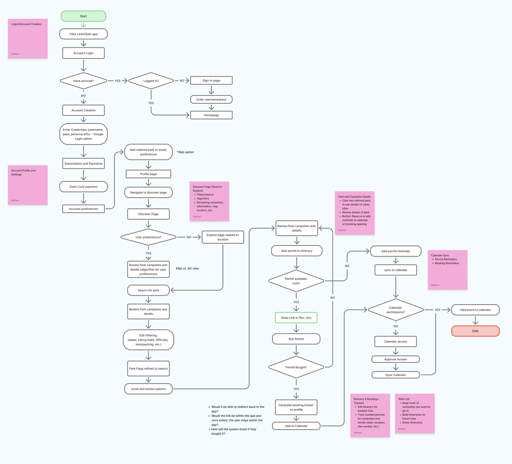
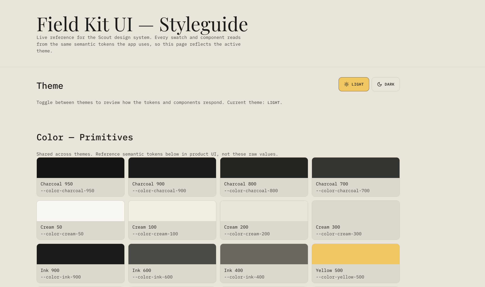
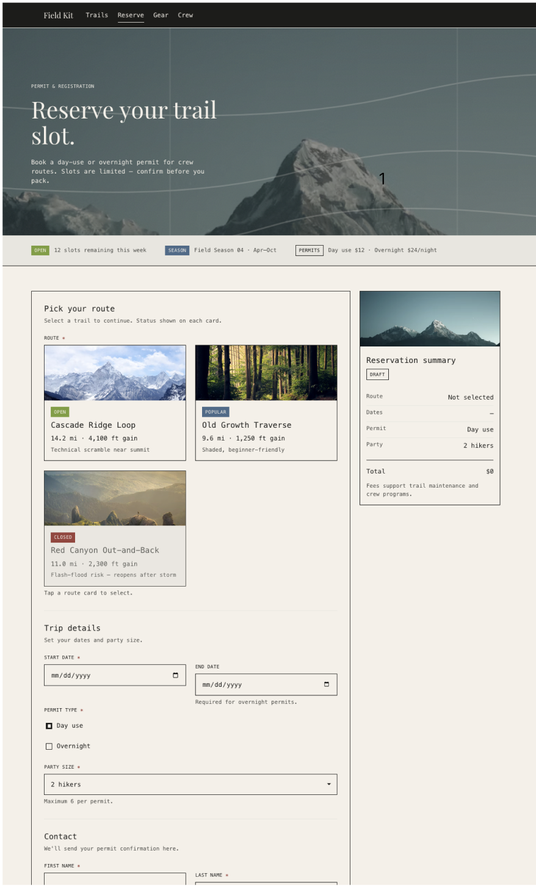
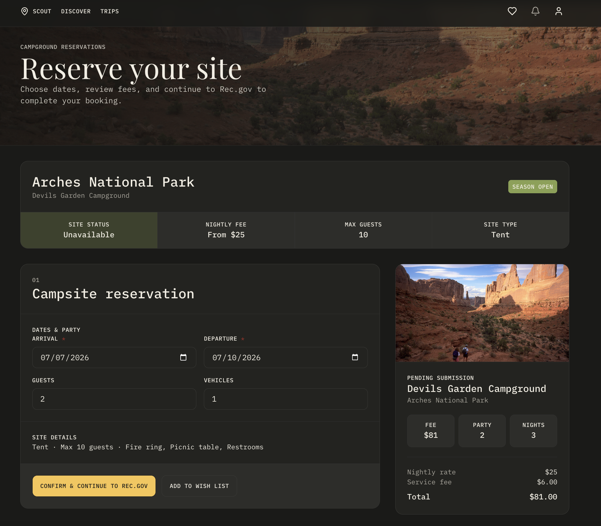
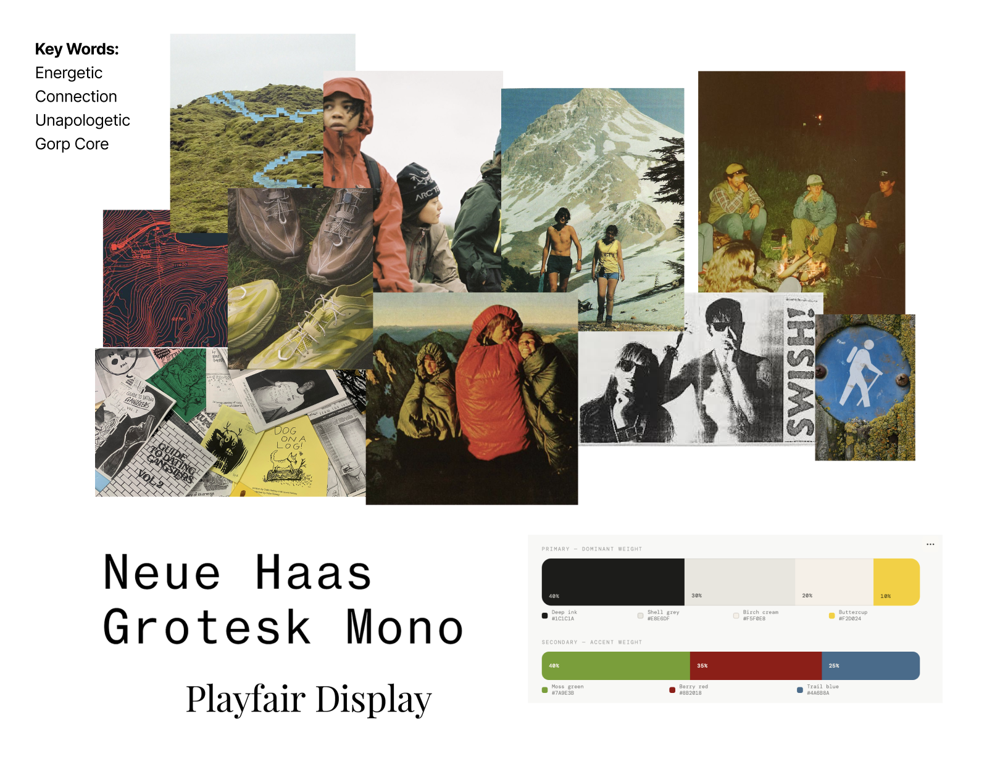
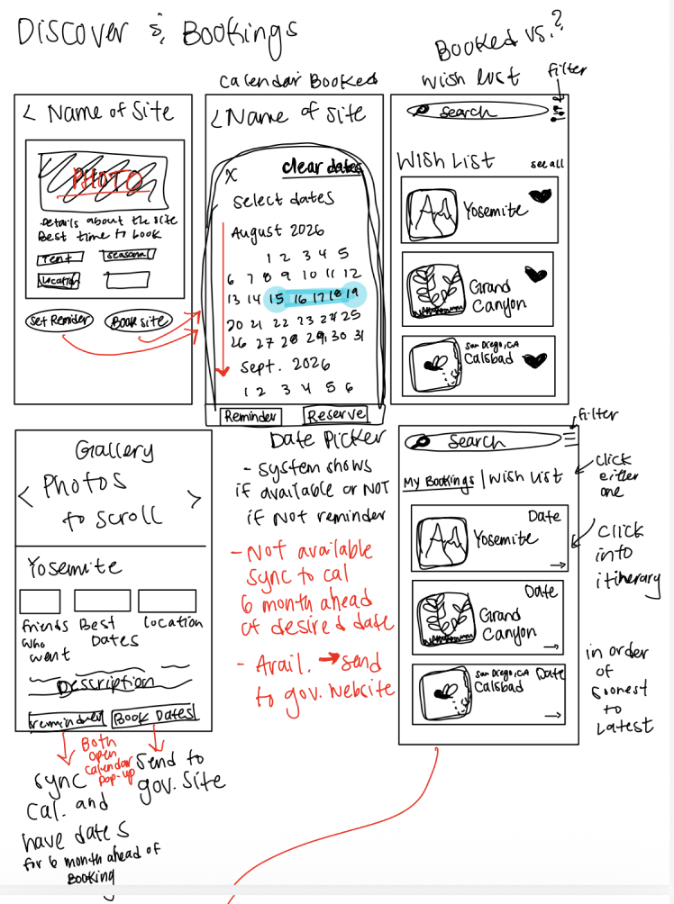
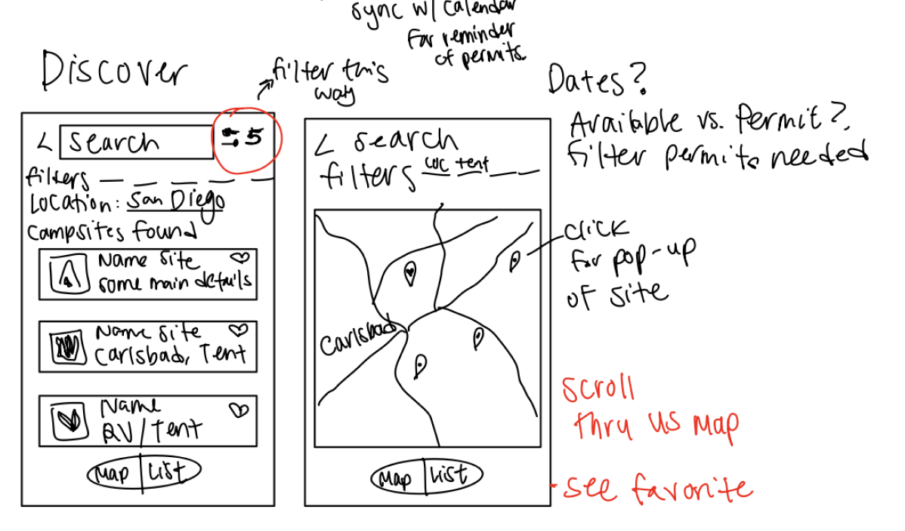

Scout — Camping Permit Booking & Reminders
A mobile-first web app that turns the messy, deadline-driven national park permit process into a guided flow with proactive reminders — and the project where I built a full AI-assisted development workflow end to end, from scripted userflows to a live, deployed product with real auth and real data.

Overview
Scout is a mobile-first web app that helps campers reserve hard-to-get national park campsites by turning the messy, deadline-driven permit process into a guided flow with proactive reminders. This project was also where I built a full AI-assisted development workflow end to end, from scripted userflows and a custom design system through to a live, deployed product with real authentication and real data.
Problem
Booking a campsite at a popular national park is a timing game most people lose. Permit windows open on specific future dates, availability is scarce, and the tools that exist (Rec.gov, scattered park websites) assume you already know when and where to look. The user problem: planners miss booking windows because there's no unified way to track when a specific park's permit opens, and no nudge at the right moment. The business/service problem: high intent to camp doesn't convert into bookings, because the critical “window opens” moment happens off-platform and unremembered.
Constraints that shaped the work
- Permit-window deadlines are fixed and unforgiving. The experience has to reduce the odds of missing them, not just display them.
- Availability is external and volatile. Real inventory and payment live on Rec.gov, so Scout can own intent, tracking, and handoff — but not the transaction itself.
- Real park data. Parks and campsites come from the public NPS API, so the catalog had to be built around live, sometimes-incomplete data rather than idealized mockups.
- Mobile-first. People plan trips on their phones, so every core flow had to work in a small viewport.
Approach
I translated the problem into structure before generating a single screen: explicit site architecture, scripted userflows, and a documented design system, each built to double as direct input for AI-assisted development.
Userflows written as executable logic, not narrative
I scripted the three core jobs (Discover and Explore Parks, Set a Permit Booking Reminder, Sync Trip and Manage Itinerary) as step-by-step conditional flows, e.g. “user clicks a Park Card → system checks date availability → user clicks Add Reminder → system prompts for calendar permission.” Writing flows at this level of precision is what let AI tools generate a working approximation of the real product on the first pass, rather than a generic template.

A documented design system, developed and iterated deliberately
I built the “Field Kit” system (DESIGN.md) from a moodboard through a structured six-step process: analyze the moodboard, define design principles, set design tokens, define components, write the doc, then review and refine. I ran a second full iteration pass once the tokens were tested against a real screen, refining color, type, and spacing rules before scaling to the rest of the app. The result: warm paper surfaces, ink-forward contrast, Neue Haas Grotesk Mono paired with a single Playfair Display editorial moment per screen, and one reserved yellow accent for the primary action on each screen.

Fluency across the AI-assisted build stack
The core skill this project developed was sequencing tools that don't natively talk to each other into one pipeline: Figma Make for early design generation, Cursor (in plan mode, then agent mode) for implementation, Supabase for auth/database/edge functions, GitHub for version control, and Netlify for deployment. Knowing when to hand the AI agent a plan versus when to intervene directly was as much the learning objective as the finished app — the design evolved from an early AI-generated pass to a refined, shipped screen.


Process
The path from plan to shipped product:
- Site structure and userflows became the IA. I initialized the app with 11 planned pages (Login, Home, Discover, Park Detail, Campsite Detail, Booking, Trips, Wishlist, Profile, Settings, Notifications) and scripted three full userflows before generating any screens. This became the actual route structure:
/discover,/park,/campsite,/book,/trips,/wishlist,/profile, with reminders surfaced across multiple pages rather than buried in one settings screen. - Design system before screens, validated and re-tuned once live. Locking the Field Kit tokens down before generating pages kept roughly a dozen screens visually consistent instead of drifting screen-by-screen, and having it documented meant I could direct the AI agent with rules instead of re-explaining style on every prompt.
- Database schema generated from the userflows, then reviewed before execution. Rather than designing tables first, I had Cursor design the Supabase schema directly from the site structure and userflows I'd already written, then reviewed a PLAN.md and explicitly separated planning from execution (plan mode, then agent mode) instead of one-shotting the build.
- Real data wired deliberately, not bolted on. I added the Supabase plugin, then integrated the public NPS Parks API through a Supabase edge function so the API key stayed server-side in secrets rather than exposed to the client, treating the “look at the data before you build” step as a discrete part of the process rather than a shortcut.
- Calendar sync scoped as its own build step. Once the core flows worked, I specifically prompted for a way to sync permit reminders to a user's personal calendar (mobile or Google), treating notification delivery as a distinct design decision rather than a generic in-app alert.
- Version control and deployment built into the workflow. Changes were committed and pushed through GitHub (with secrets and env files excluded), then published to Netlify, making this a live, shareable product rather than a local prototype.
Design artifacts
The planning work that fed the AI-assisted build — from mood, to a documented system, to scripted flows, to screen sketches.



Key product decisions and trade-offs
- Track-and-handoff vs. in-app checkout. I chose to model booking intent and route users to Rec.gov rather than fake a transaction. Trade-off: less “wow” in a demo, but honest, and it matches how the real ecosystem works.
- Reminders as the hero, not a feature. Rather than burying reminders in settings, I surfaced a Permit Reminders section on Home and “Add Reminder” on every campsite, betting that proactive nudges are the product's core value.
- Calendar sync without a heavy integration. Instead of building OAuth calendar write access, I used a Google Calendar “add event” URL plus a downloadable, shareable .ics file. Trade-off: no two-way sync, but it works across Google, Apple, and device calendars with zero auth friction — the right call for the coursework scope.
- Real data over mock. I integrated the live NPS API through a Supabase edge function to keep the key server-side, accepting the extra complexity of handling incomplete or variable API data.
Solution
Scout shipped two connected experiences.
The permit booking flow
From Discover, users filter parks by activity, region, and season (with a map/list toggle), drill into a park's seasonal guide and campsite list, and enter their desired dates. On the Booking page they confirm reservation details, guests and vehicles, and a transparent fee breakdown, then continue to Rec.gov for the actual payment. The key design move is honesty about the handoff: Scout does the planning, comparison, and prep work that Rec.gov doesn't, then gets the user to the right place to transact. Anything not ready to book can be saved to a Wishlist.
The reminder system
Because the permit window is the decisive moment, reminders are front and center: users set a reminder on any park or campsite, choose timing and notification method, and the app syncs it to their calendar — either via a Google Calendar link or a shareable, downloadable .ics event that works on iOS, Android, and desktop. Trips get the same treatment, so arrival, departure, and permit details land on the user's calendar, and trips can be shared with collaborators.
Supabase Auth and profiles, RLS-scoped user data, avatar storage, and edge functions for NPS park and climate data.
Outcome
This is a coursework prototype with real park data and authentication, built solo, deployed live rather than left as a local build.
- Shipped a coherent, real-data product across roughly a dozen routes on a consistent, documented design system, with live NPS parks rather than throwaway mockups.
- Built and operated a full AI-assisted development pipeline end to end (Figma Make → Cursor → Supabase → GitHub → Netlify), a transferable workflow I can apply to future products, not just this one.
- Demonstrated the ability to translate ambiguous product goals into structured, machine-readable inputs (userflows, schemas, design tokens) that make AI-assisted development reliable rather than random.
- Next steps if I continued: usability testing on the reminder and booking-handoff flows, real-time availability data, and instrumentation to measure reminder-set rate and reminder-to-Rec.gov click-through.
Reflection
Designing around one decisive moment — the permit window opening — beats designing more features. Anchoring the whole product on that event clarified every downstream decision.
What I learned
- Designing around one decisive moment (the permit window opening) beats designing more features. Anchoring the whole product on that event clarified every downstream decision.
- Precision in planning artifacts (userflows, schemas, design tokens) is what makes AI-assisted development produce reliable, on-brand output instead of generic results. The more explicit the input, the more usable the output.
- Building with AI tools is its own skill, distinct from design or engineering. Knowing how to sequence Figma Make, Cursor, Supabase, GitHub, and Netlify — and where to step in and correct the AI's output — was the core capability this project built.